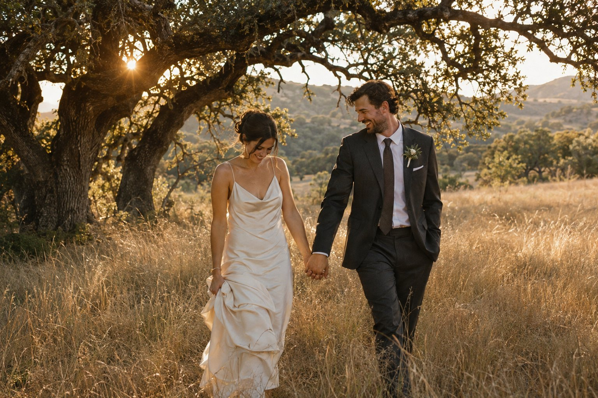

A little wind. A little wild. All heart.AUSTIN + TEXAS HILL COUNTRYThe fleeting moments.
The fleeting moments.
Kept forever.
Wedding photographs that feel like the day.
And like the two of you.
Not a performance.
A memory you can step back into.
Golden Hour Photography is an Austin-based wedding photography studio serving Austin and the Texas Hill Country. We make heartfelt, candid photographs and warm, true-to-life portraits for couples who want to be present for their celebration.
We offer wedding photography, engagement sessions, and second-photographer coverage. Our approach is candid documentary photography with warm, true-to-life portraits.
Meet Alex and the studio ↗
For the people who make a place feel like home.

For the quiet in between.